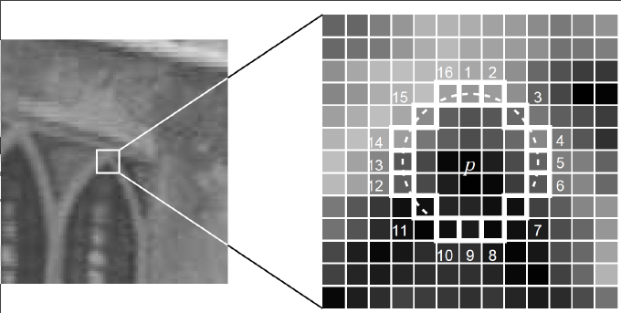

目录
传统机器视觉基础
传统计算机视觉
FAST特征点检测算法
FAST只是一种特征点检测算法，并不涉及特征点的特征描述。
-
FAST的提出者Rosten等将 FAST角点 定义为：若某像素与其周围邻域内足够多的像素点相差较大，则该像素可能是角点。
-
算法流程
-

- 以像素$p$为中心，半径为3的圆上，有16个像素点
- 定义一个阈值，计算$p1$、$p5$、$p9$、$p13$与中心$p$的像素差，若它们的绝对值至少有三个超过阈值，则当作候选角点，否则不可能是角点
- 若$p$是候选点，则计算$p1$到$p16$这16个点与中心$p$点的像素差，若它们至少有连续9个超过阈值，则为角点，否则不可能是角点
- 对图像进行非极大值抑制（nms）：判断以特征点$p$为中心的一个邻域（如3x3或5x5）内，计算若有多个特征点，则判断每个特征点的$s$值（16个点与中心差值的绝对值总和），若$p$是邻域所有特征点中响应值最大的，则保留；否则，抑制。若邻域内只有一个特征点（角点），则保留。得分计算公式如下（公式中用$V$表示得分，$t$表示阈值）：
$$ V = max \begin{cases} \sum{pixel values - p}, & \text{if (value - p) > t} \\\ \sum{p - pixel values}, & \text{if (p- value) > t} \end{cases} $$
-
BRIEF特征点描述算法
-
BRIEF是对已检测到的特征点进行描述，它是一种二进制编码的描述子，摈弃了利用区域灰度直方图描述特征点的传统方法，大大的加快了特征描述符建立的速度，同时也极大的降低了特征匹配的时间，是一种非常快速，很有潜力的算法。 由于BRIEF仅仅是特征描述子，所以事先要得到特征点的位置
-
算法流程
-
为减少噪声干扰，需对图像先进行滤波（如高斯滤波）
-
以特征点为中心，取$S \times S$的邻域窗口。在窗口内随机选取一对（两个）点，比较二者像素的大小，进行如下二进制赋值。 $$ \iota(p;x,y):=\begin{cases} 1,& \text{$if p(x)<p(y)$ } \\\ 0,& \text{$otherwise$} \end{cases} $$ 其中，$p(x)$，$p(y)$分别是随机点$x=(u1,v1)$, $y=(u2,v2)$的像素值。
-
在窗口中随机选取$N$对随机点，重复步骤2的二进制赋值，形成一个二进制编码，这个编码就是对特征点的描述，即特征描述子。（一般$N=256$）
-
-
利用BPIEF特征进行配准
经过特征点提取，对于一幅图中的每一个特征点，都得到了一个256bit的二进制编码。接下来对有相似或重叠部分的两幅图像进行配准。
- 特征配对是利用汉明距离进行判决的：
- 两个特征编码对应bit位上相同元素的个数小于128的，一定不是配对的。
- 一幅图上特征点与另一幅图上特征编码对应bit位上相同元素的个数最多的特征点配成一对。
- 特征配对是利用汉明距离进行判决的：
ORB算法（快速特征点提取和描述算法）
- ORB算法分为两部分，分别是特征点提取和特征点描述。特征提取是由FAST算法（前面已经学过）发展来的，特征点描述是根据BRIEF特征描述算法改进的。
-
算法流程
ORB对FAST的改进或者拓展，主要是为其增加了其尺度不变性以及旋转不变性。接下里来看一看怎么实现的。
-
关键点提取
- 通过FAST算法提取特征点
- 建立金字塔 设置一个比例因子$scale$（opencv默认取1.2）和金字塔层数$n$（通常取8），将原图像按比例因子缩小为$n$幅图像（ $I’ = I/scale^k$ ） $k=1、2、3 \dots n$幅不同比例的图像提取特征点总和作为原图的FAST特征点
- 定义特征点方向
ORB的论文中提出了一种利用灰度质心法来解决这个问题，通过计算一个矩来计算特征点以$r$为半径范围内的质心，特征点坐标到质心形成一个向量作为该特征点的方向。我们来看看具体怎么实现灰度质心法。 一个图像块（比如5x5的图像块），对应2x2的矩的元素表达为：
$$ m_{pq} = \sum_{x,y} \ x^p y^q I(x,y) $$
- $x,y$ 分别为坐标值，$I(x,y)$为像素值而该图像的窗口质心为：
$$ C = (\frac{m_{10}}{m_{00}},\frac{m_{01}}{m_{00}}) $$
那么特征点与质心的夹角定义为FAST特征点的方向：
$$ \theta = arctan(m_{01},m_{10}) $$
有了特征点的方向，继而实现旋转不变性。
-
关键点描述
ORB选择了BRIEF作为特征描述方法，并对其进行改进使其加上旋转不变性并增加其可区分性。
-
BRIEF描述子
BRIEF算法计算出来的是一个二进制串的特征描述符。 它是在每一个特征点的邻域内，选择n对像素点$8pi、qi（i=1,2,…,n）$。然后比较每个点对的灰度值的大小。如果$I(pi)> I(qi)$，则生成二进制串中的1，否则为0。所有的点对都进行比较，则生成长度为$n$的二进制串。一般$n$取128、256或512，通常取256。 为了增强抗噪性，一般会先对图像进行高斯平滑。ORB算子采用5x5的子窗口进行平滑。
$n$个点对的选取方法
-
在点周围选取点对$（p,q）$的方法
-
$p$和$q$都符合$(0,S2/25)$的高斯分布；
- $p$符合$(0,S2/25)$的高斯分布，而$q$符合$(0,S2/100)$的高斯分布；
-
在空间量化极坐标下的离散位置随机采样；
-
把$p$固定为$(0,0)$，$q$在周围平均采样。
-
-
BRIEF算法改进
增加其旋转不变性，选点方式改进
-
steered BRIEF增加其旋转不变性
所谓steered BRIEF就是对挑选出的点对加上一个旋转角度$θ$。对于任何一个特征点来说，它的BRIEF描述子是一个长度为𝑛的二值码串，这个二值码串是由特征点邻域𝑛个点对生成的，我们现在讲这2𝑛个点(𝑥𝑖,𝑦𝑖),𝑖=1,2,…..,2𝑛组成一个矩阵𝑆: $$ S = \left[ \begin{matrix} x_1 & x_2 & … & x_{2n}\\\ y_1 & y_2 & … & y_{2n} \end{matrix} \right] $$
使用邻域方向$\theta$和对应的旋转矩阵$R_\theta$，构建$S$的一个校正版本$S_\theta$： $$ S_\theta = R_\theta S $$ 其中
$$ R_\theta = \left[ \begin{matrix} \cos\theta & sin\theta \\\ -sin\theta & cos\theta \end{matrix} \right] $$
-
steered BRIEF加入了旋转不变性，但同时特征描述量的可区分行就下降了,所以就有了ORB作者提出的rBRIEF
-
rBRIEF增加其可区分性 ORB使用统计学习的方法来重新选择点对集合，目的是增大其特征描述量的可区分行。
-
-
- OpenCV大致思路：
- 一个就是将提取的角点信息进行格式化，输出为numpy数组：
1 2 3 4 5 6 7 8 9 10 11## 提取图像ORB特征并转化为numpy数组 def extraORBfromImg(ORB, img): keypoints, desc = ORB.detectAndCompute(img, mask=None) # 关键点检测 ## 特征点信息 axis = np.array([kp.pt for kp in keypoints]) # 特征点图像坐标 scale = np.array([kp.octave+1 for kp in keypoints])# 特征点尺度(在哪一层金字塔) direct = np.array([kp.angle*np.pi/180 for kp in keypoints]) # 特征点方向(弧度) ## 拼接 infos = np.array([scale,direct]).T cors_info = np.hstack([axis,infos]) return cors_info, desc- 另一个就是进行图像间的角点匹配函数：
1 2 3 4 5 6 7 8 9 10 11## ORB特征BRIEF描述子匹配 def ORBMatch(BF, desc1, desc2): matches = BF.match(desc1, desc2) dist = np.array([mc.distance for mc in matches]) idx1 = np.array([mc.trainIdx for mc in matches]) idx0 = np.array([mc.queryIdx for mc in matches]) idx = np.array([idx0,idx1]).T ## 匹配点筛选，当描述子之间的距离大于两倍的最小距离时，认为匹配有误 min_dist = min(dist) filte_idx = np.where(dist <= max(2 * min_dist, 30))[0] return dist[filte_idx], idx[filte_idx,:]- 由于
ORBMatch函数返回的是所有点的匹配距离和匹配索引，因此必要时我们还需要一个函数计算匹配点对的坐标：
1 2 3 4 5## 获取图像对匹配点的坐标(一对) def findMatchCord(match_idx, cors1, cors2): left = cors1[match_idx[:,0], :2] right = cors2[match_idx[:,1], :2] return np.hstack([left, right])- 结果示例：
-
-
NMS算法（非极大值抑制）
- 目标检测过程中在同一目标的位置上会产生大量的候选框，这些候选框相互之间可能会有重叠，此时我们需要利用非极大值抑制找到最佳的目标边界框，消除冗余的边界框。
-
流程一般如下：
前提 ：目标边界框列表及其对应的置信度得分列表，设定阈值，阈值用来删除重叠较大的边界框。
IOU ：intersection-over-union，即两个边界框的交集部分除以它们的并集。
- 根据置信度得分进行排序
- 选择置信度最高的边界框添加到最终的传输列表中，将其从边界框列表中删除
- 计算所有边界框的面积
- 计算置信度最高的边界框与其他候选框的loU
- 删除loU大于阈值的边界框
- 重复上述过程，直至边界框列表为空
RANSAC算法()
-
随机抽样一致算法 ，采用迭代的方式从一组包含离群的被观测数据中估算出数学模型的参数，RANSAC算法假设数据中包含正确数据和异常数据（或者噪声）。正确数据记为内点（inliers），异常数据记为外点（outliers）。同时RANSAC也假设，给定一组正确的数据，存在可以计算出符合这些数据的模型参数的方法。该算法核心思想就是随机性和假设性， 随机性 是根据正确数据出现概率去随机选取抽样数据，根据大数定律，随机性模拟可以近似得到正确结果。 假设性 是假设选取出的抽样数据都是正确数据，然后用这些正确数据通过问题满足的模型，去计算其他点，然后对这次结果进行一个评分。
RANSAC的基本就假设是：
- 数据由“局内点”组成，例如：数据的分布可以用一些模型来解释;
- “局外点”是不能是适应模型的数据;
- 除此之外的数据属于噪声。
RANSAC也做出了以下假设：给定一组（通常很小的）局内点，存在一个可以估计模型参数的过程；而该模型能够解释或者适用于局内点。
-
算法流程：
- 选择出可以估计出模型的最小数据集；(对于直线拟合来说就是两个点，对于计算Homography矩阵就是4个点)
- 使用这个数据集来计算出数据模型；
- 将所有数据带入这个模型，计算出“内点”的数目；(累加在一定误差范围内的适合当前迭代推出模型的数据)
- 比较当前模型和之前推出的最好的模型的“内点“的数量，记录最大“内点”数的模型参数和“内点”数；
- 重复1-4步，直到迭代结束或者当前模型已经足够好了(“内点数目大于一定数量”)。
RANSAC算法的输入是一组观测数据，一个可以解释或者适应于观测数据的参数化模型，一些可信的参数。
- 输入
1 2 3 4 5 6data // 一组观测数据 model // 适应于数据的模型 n // 适应于模型的最少数据个数，如果是直线的话，n=2 k // 算法的迭代次数 t // 用于决定数据是否应用于模型的阈值 d // 判定模型是否适用于数据集的数据个数，人为设定- 输出
1 2 3best_model // 跟数据最匹配的模型参数（如果没有好的模型，返回null） best_consensus_set // 估计出模型的数据点 best_error // 跟数据相关的估计出的模型错误
Kmeans算法
-
聚类与KMeans
聚类是在事先并不知道任何样本标签的情况下，通过数据之间的内在关系把样本划分为若干类别，使得同类别样本之间的相似度高，不同类别之间的样本相似度低（即增大类内聚，减少类间距）。
K均值聚类是最基础常用的聚类算法。它的基本思想是：通过迭代寻找K个簇（Cluster）的一种划分方案，使得聚类结果对应的损失函数最小。其中，损失函数可以定义为各个样本距离所属簇中心点的误差平方和： $$ J(c, \mu) = \sum _{i=1} ^{M} \parallel x_i - \mu _{c_i} \parallel ^2 $$
其中 $x_i$ 代表第 $i$ 个样本，$c_i$ 是 $x_i$ 所属的簇，$\mu_{c_i}$ 代表簇对应的中心点，$M$是样本总数
-
算法流程
KMeans的核心目标是将给定的数据集划分成K个簇（K是超参），并给出每个样本数据对应的中心点。具体步骤非常简单，可以分为4步：
- 数据预处理。主要是标准化、异常点过滤。
- 随机选取K个中心，记为 $\mu_1^{(0)}$ , $\mu_2^{(0)}$ ,……, $\mu_k^{(0)}$
- 定义损失函数:
$$ J(c, \mu) = \sum _{i=1} ^{M} \parallel x_i -\mu _{c_i} \parallel ^2 $$
-
令 t = 0, 1, 2,……为迭代步数，重复如下过程直到 $J$ 收敛:
- 对于每一个样本 $x_i$ ,将其分配到距离最近的中心 $$ c_i^t < - argmin_k \parallel x_i - \mu_k^t \parallel ^2 $$
- 对于每一个类中心k，重新计算该类的中心
$$ \mu_k^{t+1} < -argmin_{\mu} \sum _{i:c_i^t = k} ^b \parallel x_i - \mu \parallel ^2 $$
KMeans最核心的部分就是先固定中心点，调整每个样本所属的类别来减少 $J$ ；再固定每个样本的类别，调整中心点继续减小$J$ 。两个过程交替循环， $J$ 单调递减直到最（极）小值，中心点和样本划分的类别同时收敛。
KMeans 迭代示意图：
-
KMeans算法步骤：
- 随机初始化k个点作为簇质心；
- 将样本集中的每个点分配到一个簇中；计算每个点与质心之间的距离（常用欧式距离和余弦距离），并将其分配给距离最近的质心所对应的簇中；
- 更新簇的质心。每个簇的质心更新为该簇所有点的平均值；
- 反复迭代2 - 3 步骤，直到达到某个终止条件；（a. 达到指定的迭代次数；b. 簇心不再发生明显的变化，即收敛；c. 最小误差平方和SSE；）
-
SSE(Sum of Square Error, 误差平方和)，SSE值越小表示数据点越接近于它们的质心，聚类效果也越好。
$$ SSE = \sum_{i = 1} ^ k \sum_{x\in C_i} (x-\mu_i) ^2 $$
$$ \mu_i = \frac{1}{|C_i|} \sum_{x\in{C_i}} x $$
算法过程：
- 点 $x = (x_1,x_2,……,x_n)$ 和点 $y = (y_1,y_2,……,y_n)$ 之间的欧氏距离为：
$$ d(x,y) = \sqrt{(x_1-y_1)^2 + (x_2-y_2)^2 +……+ (x_n-y_n)^2} $$
- 两个向量 A 和 B，其余弦距离（即两向量夹角的余弦）由点积和向量长度给出，计算公式如下：
$$ cos\theta = \frac{A * B}{|A|*|B|} = \frac{\sum_{i=1}^n A_i B_i} {\sqrt{\sum_{i=1}^n (A_i)^2} \sqrt{\sum_{i=1}^n (B_i)^2}} $$
$$ dist(A,B) = 1 - cos(A,B) = \frac{|A| _2 |B|_2 - A * B}{|A| |B|} $$
式子中， $A_i$ 和 $B_i$ 分别代表向量A和B的各分量。
-
算法优缺点
优点：容易实现
缺点：可能收敛到局部最小值，在大规模数据集上收敛较慢
适用数据类型：数值型数据